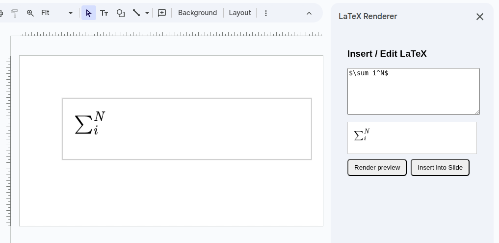

Render LaTeX equations directly inside your Google Slides.
Get it on Google Workspace MarketplaceLauTeX helps you seamlessly insert mathematical equations and symbols into your presentations without leaving Google Slides. Powered by MathJax, the add-on converts your LaTeX code into high-quality images or SVGs.
